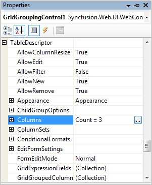
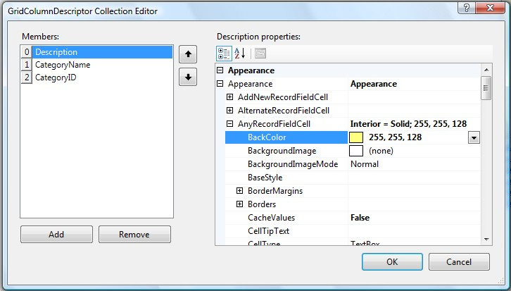

This section discusses formatting specific columns. This can be achieved via the corresponding GridColumnDescriptor.
Through Designer
Clicking the Columns property of the Grid's TableDescriptor launches the GridColumnDescriptor Collection Editor, which can be used to modify the appearance of a particular column.

Figure 117
Specify the interior color for alternate and non-alternate rows by using the options provided by the Appearance property as shown below.

Figure 118
 Note: Make sure GridGroupingControl is bound to a
data source.
Note: Make sure GridGroupingControl is bound to a
data source.
Through Code
|
[C#]
// Declare descriptors GridColumnDescriptor gridColumnDescriptor1 = this.GridGroupingControl1.TableDescriptor.Columns.FindByMappingName("CategoryID"); // Specify the appearance for alternate record cells and non-alternate record rows. gridColumnDescriptor1.Appearance.AlternateRecordFieldCell.Interior = new Syncfusion.Drawing.BrushInfo(System.Drawing.Color.FromArgb(((System.Byte)(218)), ((System.Byte)(229)), ((System.Byte)(245)))); |
|
[VB]
' Declare descriptors Private gridColumnDescriptor1 As GridColumnDescriptor = Me.GridGroupingControl1.TableDescriptor.Columns.FindByMappingName("CategoryID") ' Specify the appearance for alternate record cells and non-alternate record rows. Private gridColumnDescriptor1.Appearance.AlternateRecordFieldCell.Interior = New Syncfusion.Drawing.BrushInfo(System.Drawing.Color.FromArgb((CByte(218)), (CByte(229)), (CByte(245)))) |